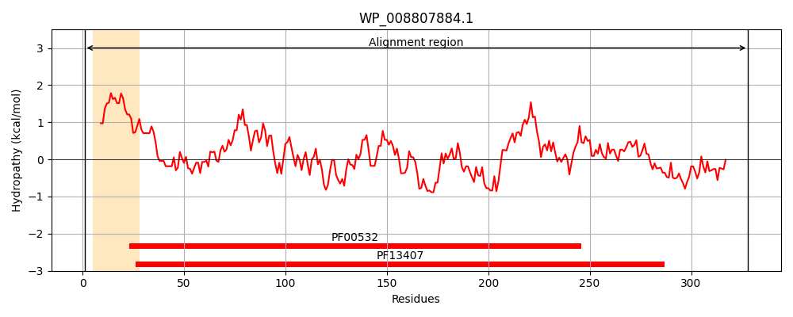
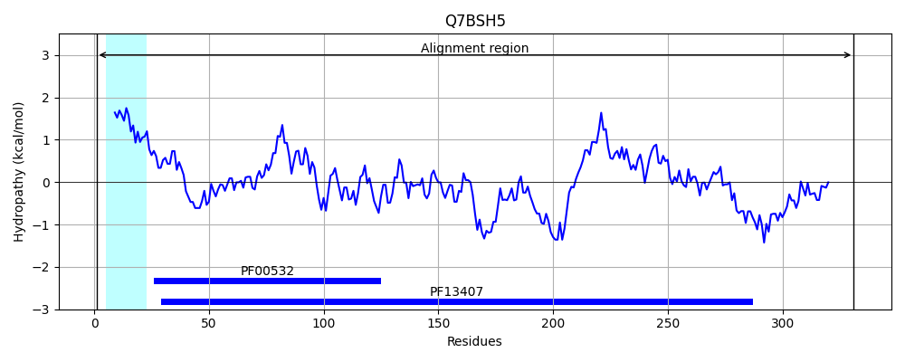
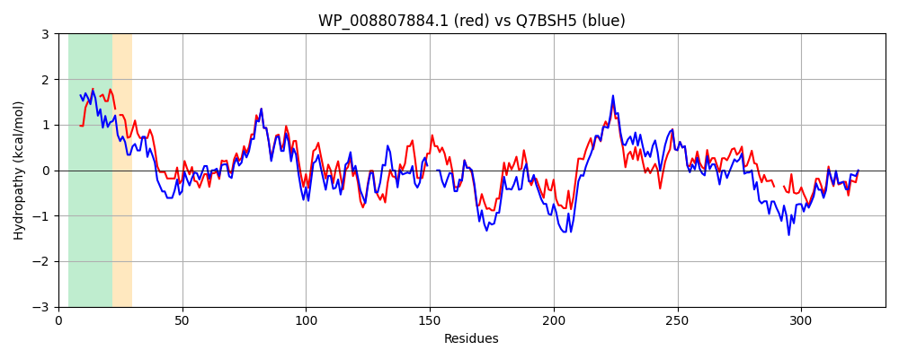

Hit Accession: Q7BSH5
Hit TCID: 3.A.1.2.9
Hit Description: gnl|BL_ORD_ID|15403 gnl|TC-DB|Q7BSH5|3.A.1.2.9 RhaS - Rhizobium leguminosarum (biovar trifolii).
Mach Len: 334
e:0.000000
Query TMS Count : 1
Hit TMS Count: 1
TMS-Overlap Score: 0.950000
Predicted Substrates:CHEBI:45460;alpha-L-rhamnopyranose
BLAST Alignment:
Score: 1072 , Bit scores: 417 bits, E-value: 2.8e-147, Alignment length: 334, Percentage identity: 65
Query: 1 MKTKTSLILTVAALA--LSGSALA-EVKIALVAKSLGNGFFEAANVGAQQAAKELGDVKVIYTGPTTTTAEAQIDVLNGLIAQGVDAIAISANDPDAVVPVLKKAMQRGIKVVSWDSGVAPAGRQIHLNPSNNALIGETNVKLAADALKALNVEKGEVAVLSATPTSTNQNIWIEEMKKVLPQYPSVQLVTVAYGDDLSDKSYREAVGLLKSYPDLKVIVSPSSVGIVAAAQAVKDQGKIGKVYVTGLGLPSEMAGAIKSGASKSFAIWNPIDLGYAATYLADDLVKGTA---TKTEASMGKLGKVKLDAEGNGAMAEPFVYDASNIDKFSKIF 328
MK +L L VA ++G+A A ++KI LV KSLGNGFF+AAN GAQ+AAKELG V+VIYTGPT+TTAE QI+V+N LIAQGVDAIA+SANDPDA+VP LKKA QRGIKV+SWDSGVAP GR + LNPS+N LIG+ + LA D L+ KG+ A+LSAT TSTNQNIWI++MKK L +P + LVT YGDDLSDKSYREA GLLKS P++KVIV+P++VG++AA++ V+D+G +GKVYVTGLGLPSEMAGAIKSGA+K FAIWNPIDLGY+AT +A LVKG +E + G++GK+K+ G AMA+PFVY+ASNID+FSK+F
Sbjct: 1 MKLAKTLALGVALAVAMMAGTASAKDIKIGLVVKSLGNGFFDAANKGAQEAAKELGGVEVIYTGPTSTTAEGQIEVINSLIAQGVDAIAVSANDPDALVPALKKATQRGIKVISWDSGVAPEGRILQLNPSSNELIGKMCLTLAKDHLEG---GKGDFAILSATTTSTNQNIWIDQMKKQLKDFPGLNLVTTVYGDDLSDKSYREAEGLLKSNPNVKVIVAPTTVGVLAASKVVEDKGLVGKVYVTGLGLPSEMAGAIKSGATKEFAIWNPIDLGYSATQIAYRLVKGETDGKPGSEINAGRMGKIKVGDNGEAAMADPFVYNASNIDQFSKVF 331 | Protein Hydropathy Plots: |
|---|
|  |  |
Pairwise Alignment-Hydropathy Plot:
|
|---|
|  |